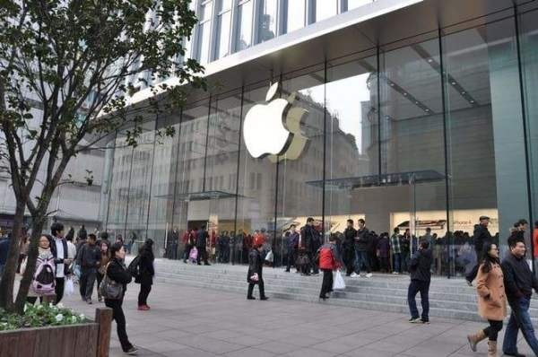

2018年09月12日 10:33:13
文章来源：观察者网；作者：傅莹
中美关系处在一个关键的当口，未来向哪个方向发展，是在座的每一个人都关心的大问题，也关系到21世纪世界的命运。
一、 美国对华政策的方向
今年以来，我见到的每个美国人士都说，美国对华政策将要彻底调整，并且声称是府学、两党的共识。但当我问到向什么方向调整？新的政策是什么？听到的意见却是五花八门。
如果把美国对华政策调整看做是一个完整的“圆”，那么可以认为前半个“圆”完成了，也即，要改变过去的做法，转变方向，但后半个“圆”, 往哪里调整，显然还没有统一认识。
缘何发生这样的变化？据说，首先是对中国经济腾飞之后没有接受美国的政治制度感到失望。其次，有些人声称美国在与中国的经贸交往中“吃亏”，更担心无法抗衡中国在全球产业链上的进取和未来的超越。第三是对中国在军事上把美国“挤出”亚太感到恐惧，视中国为安全战略上的首要竞争对手。
梳理一下看，各种应对中国的政策建议构成一个广泛的“光谱”，但可以大致分为三层：最暗端，是将中美关系引入全面对抗的轨道。这种冲动和惯性一直存在，但显然得不到大多数人的支持。“光谱”的中间，是企图将中国排斥出美国主导的世界经济体系，让中国“脱钩”。“光谱”中较明显、已经摆上台面的部分是美方挑起的“贸易战”。
美国是一个行动力比较强、国际经验丰富的国家，往往是在一个个事项的推进过程中，经过试错和凝聚共识来完成大的战略调整。因而，美国这一轮对华政策的调整，也会需要一段时间，并且受到中方言论和反应的影响。中美关系的未来最终将由双方的相互作用和选择所决定。
二、 中方怎么看？
我还记得，1994年参加了一个美国新闻署为发展中国家年轻外交官组织的访谈项目，议题是美国安全战略和政策的形成。期间我反复问这样一个问题：冷战后美国新的国际战略目标是什么？得到的回答是，在全球推行美国的人权价值观和民主制度。我当时还无法理解，美国将如何用强大的硬实力去实现这样的软性目标。
而其后的20多年美国确实是这样做的，包括在反恐战争中也没有放弃政治上改造他国的努力，成本高昂，代价巨大。美国成功了吗？即使从美方自己的评价看，也并没能在世界上实现美国价值观和政治制度的一统天下。
由此来看，美国改变中国政治制度的企图是其未能实现的改造世界目标的一部分，这就不难明白为什么在中国难以实现。在见证了所谓“颜色革命”和“阿拉伯之春”给那些国家带来的后果之后，美国应该庆幸，中国没有自废武功地走上错误的道路，既没陷入政治动荡，也没出现经济混乱。而是坚持在共产党的正确领导下，保持总体社会稳定，推进改革和开放的政策，成功走出一条具有中国特色的社会主义道路。
当然，这个经历也是千辛万苦。例如2001年入世之后，中国大规模进行法律法规的清理修订工作。在短时间内，中央政府清理了2000多件，地方政府清理了19万多件，艰难地克服在管理上推进广泛再构建的困难。国内企业突然直接面对国际竞争，多数产业陷入很大困难，有的甚至难以为继，大量工人下岗。但是中国克服了困难，充分发挥市场的活力，利用全球化带来的机遇，有效吸纳资金、技术、经验和资源，发展起庞大的制造业，成长为全球经济循环和市场流通的枢纽型国家。数以亿计的中国人民摆脱了贫困，百姓生活水平取得巨大提升。
美国不仅是中国改革开放的见证者，还是参与者和获益者。 从2001年到2016 年，美国货物贸易对华出口增长500%，远高于同期对全球出口90%的增幅。牛津研究院估计，从中国进口的低价商品帮助普通美国家庭平均每年节省850美元。根据中国商务部的数据，2016年美资企业在中国市场销售额达到6000亿美元。未来十年，中国消费市场进一步扩大，万物联网时代也会到来，中美将比以前拥有更大的合作空间。

三、中方的选择
美国学者罗伯特•普特南提出的“双层博弈”理论帮我们理解外交政策如何受到国内政治的影响。对中方来说，美国的麻烦是美国自己的问题，美国国家和社会在分裂和转型压力之下面临严峻挑战，试图拿中国做替罪羊解决不了美国的问题。中国人面对来自美国的混乱声音需要保持淡定，重要的是聚焦自身发展，解决好自己的问题。
在此, 我想分享中国人的一些看法和主张。
一是坚持正确的政策方向。中国对美政策是整体外交政策的组成部分，而中国外交政策的目标是维护一个和平的外部环境和合作的国际关系, 以服务于国家的发展。因此，中国有理由继续坚持“建设性合作”的对美政策。
中国奉行防御性的国防政策，不搞意识形态输出，与美国不存在恶意竞争。中美两国工商界和民众也不会支持这样的前景。
二是更坚定地推进改革开放。正如习近平主席所说的，过去40年中国经济发展是在开放条件下取得的，未来实现高质量发展也必须在更加开放条件下进行。
中美关系的变局对中国是严峻挑战，同时也是又一次倒逼改革、激励前进的机会。美方各界提出来的市场准入等问题，许多正是中方需要通过改革着力解决的。习近平主席今年四月在博鳌亚洲论坛宣布进一步开放金融业后，央行的11项具体承诺，迄已落实8项，包括取消银行和金融资产管理公司的外资持股比例限制，内外资一视同仁，允许外国银行在我国境内同时设立分行和子行，涉及银行、证券、保险、评级、征信、支付等。
政府也在下大力气改善营商环境，加强对产权和知识产权的保护，切实为中外企业创造良好的发展环境。上半年新设立外商投资企业同比几乎翻了一番，其中不乏美国公司。中国稳定的投资环境、较强的配套能力、巨大的市场，以及公平透明的政策是吸引他们的关键因素。
三是坚持对话沟通，以拆解矛盾和解决问题的方式渡过中美关系的险滩激流。
目前中美贸易战带来巨大不确定性，不仅中国企业不赞成，许多美国企业也表达了反对和担忧的意见。美国自从上世纪70年代初放弃美元与黄金挂钩后，就一直存在贸易逆差且不断增大。即便能成功减少从中国进口大量消费品，美国也要从其他国家进口，并以更高的价格和打乱全球生产、供应的市场秩序为代价。值得注意的是，有分析认为，贸易战的深层意图是挫伤中国经济，压制赶超势头。
这场较量真正的影响会在未来显现，结果如何现在还看不出来。中方不赞成美方用打压的方式逼迫让步，绝不会、也不能屈服于关税霸凌。我看到美国有官员和媒体拿中国经济中的问题说事，以为已经打痛中国，可以期待中国屈服了，表现出对中国的缺乏了解和一厢情愿。

芳草地6699 [山西省,晋城市网友]
傅莹女士是一个伟大的女性，她有文化，行为得体，作为一个外交界人员，是十分称职的。
芳草地6699 [山西省,晋城市网友]
傅莹女士是一个伟大的女性，她有文化，行为得体，作为一个外交界人员，是十分称职的。

一键登录： 凤凰帐号/新浪微博
凤凰网国际智库由凤凰网集中优势资源重点打造的平台型智库，旨在打造中国最具影响力的国际问题研究智库，致力于成为“思想市场领导者”。将思想产品的生产和传播有效的结合起来，在智库与智库之间达成协作共赢。